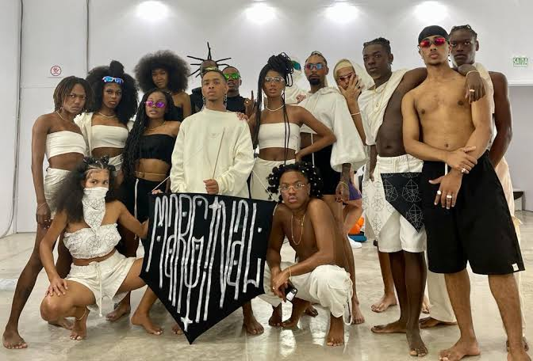
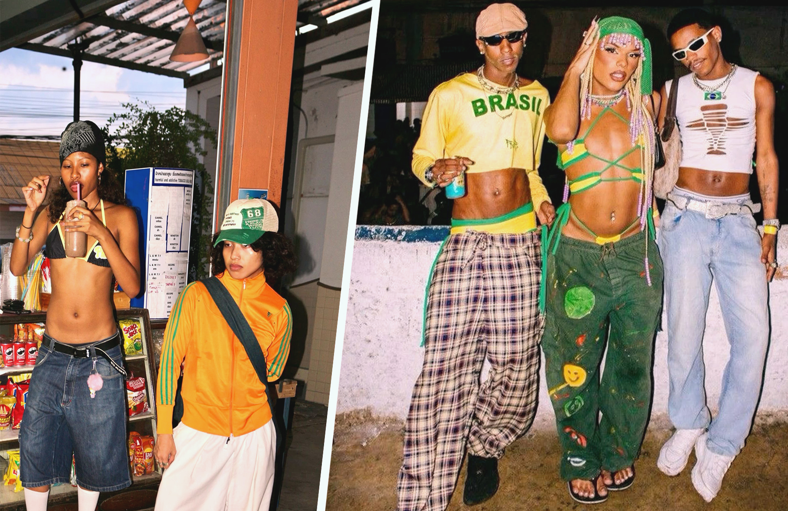
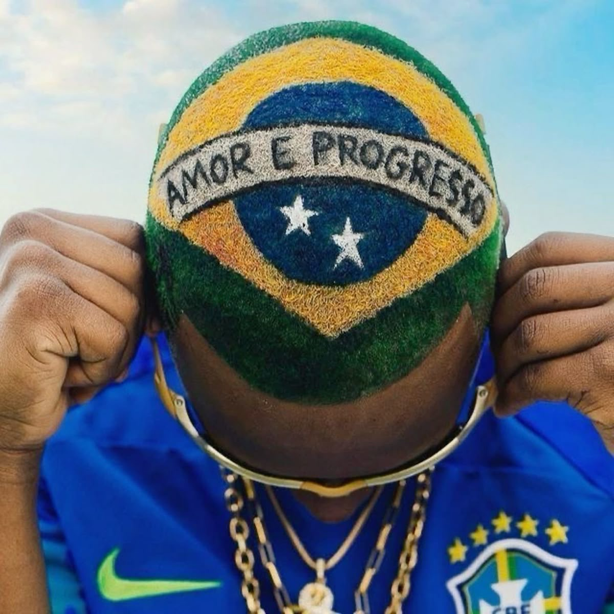
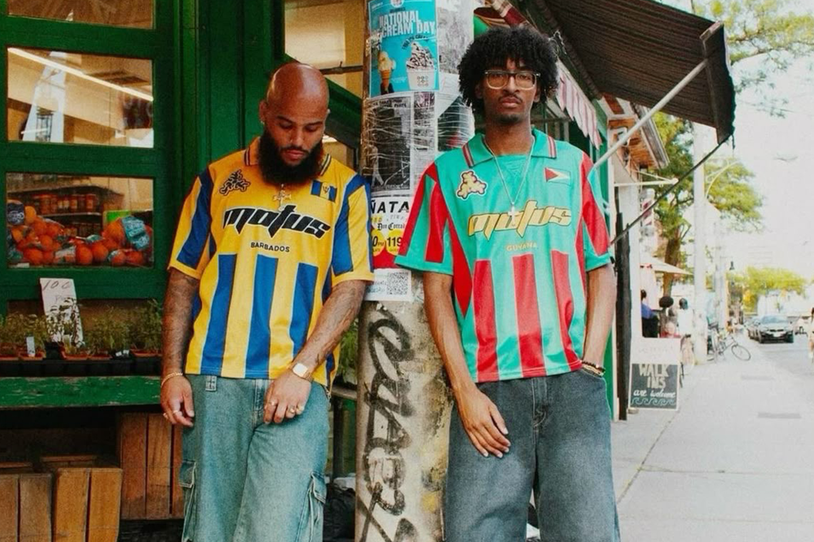
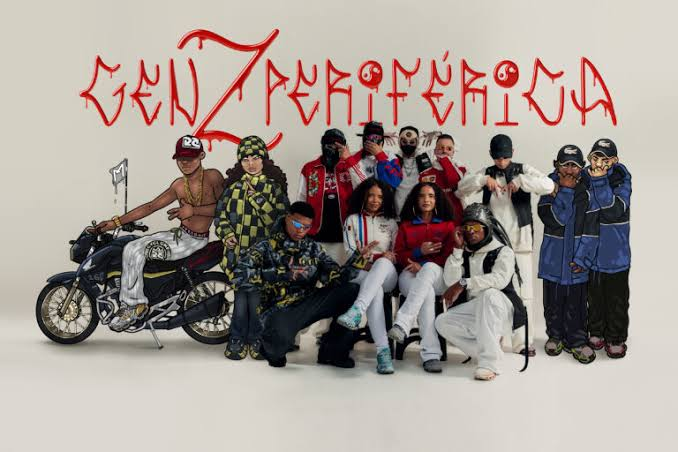

Sobre nós
Bem-vindo ao nosso espaço, onde a moda marginal ganha voz e significado. Aqui, exploramos o universo das roupas além das tendências, mergulhando em suas histórias, origens e simbolismos. Nosso compromisso é revelar a essência por trás de cada peça, trazendo a cultura, a rebeldia e a autenticidade que movem a moda alternativa. Se vestir é mais do que estilo, é identidade. E aqui, celebramos todas elas.